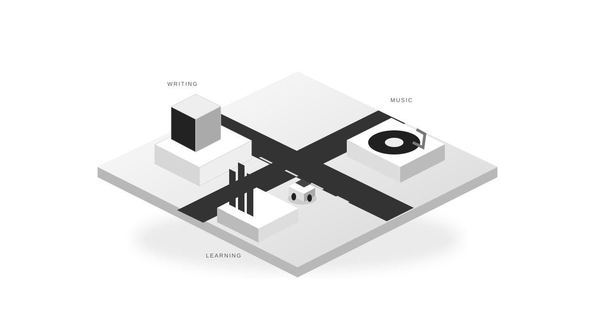

HTML5 入门笔记：从网页结构到常用功能
学习前端开发，首先需要理解网页是怎样组织起来的。一篇文章的标题、导航、图片、视频和表单，都需要通过 HTML 描述。这篇笔记从基础文档结构出发，介绍 HTML5 的常用能力，并通过简单示例说明它们的使…
本站可读全文
认真学习，
也给好奇心留一点空间。
一点代码，
很多可能。
写一点，学一点，
再给日常配一点音乐。
我的学习库 · 把零散灵感串起来
方向键 / WASD 驾驶小车。
靠近站点，按 Enter 去看看。

小世界正在准备中…学习前端开发，首先需要理解网页是怎样组织起来的。一篇文章的标题、导航、图片、视频和表单，都需要通过 HTML 描述。这篇笔记从基础文档结构出发，介绍 HTML5 的常用能力，并通过简单示例说明它们的使…
读到这里，你可能会想：“道理我都懂，然后呢？第一，别囤工具，先把一个用熟。挑一个语言 AI（比如你正在用的豆包），连续用它解决你真实工作里的 10 件事，比看 100 篇教程都管用。第二，AI 的答案…
这些数字来自这里已经收录的文章。
保持好奇。下一件有趣的事，正在路上。
在 CSDN 继续阅读